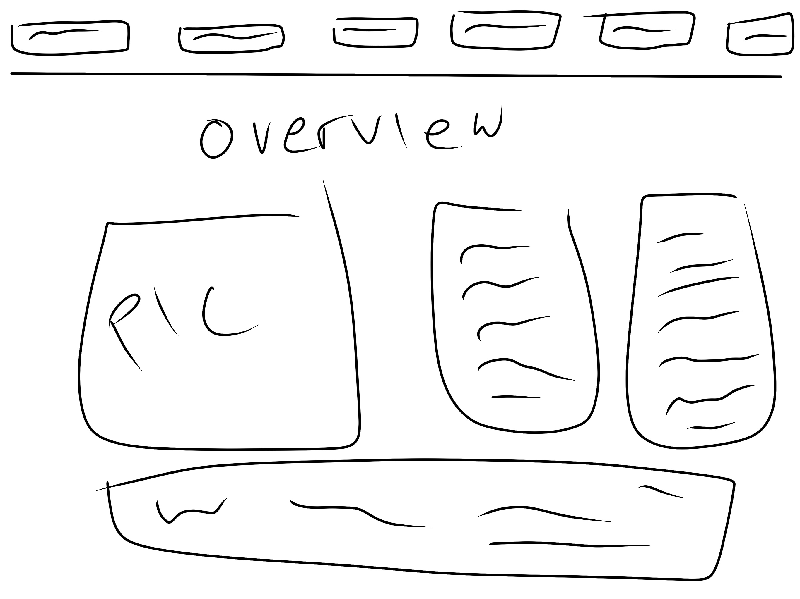
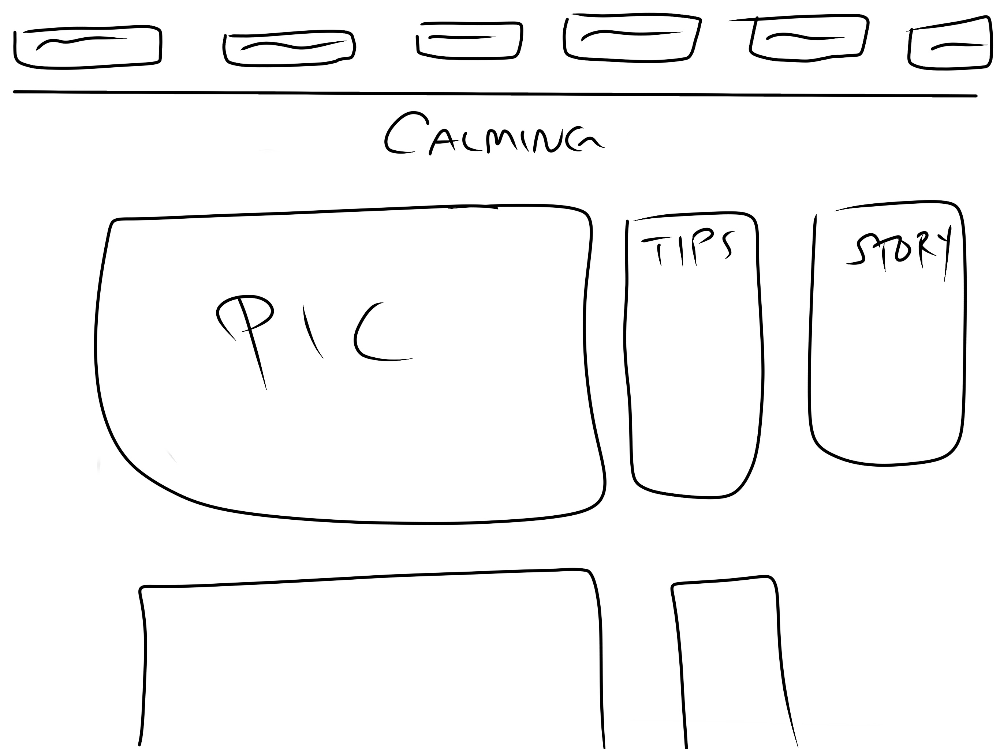
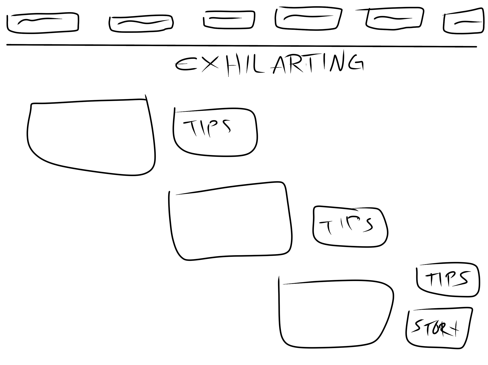
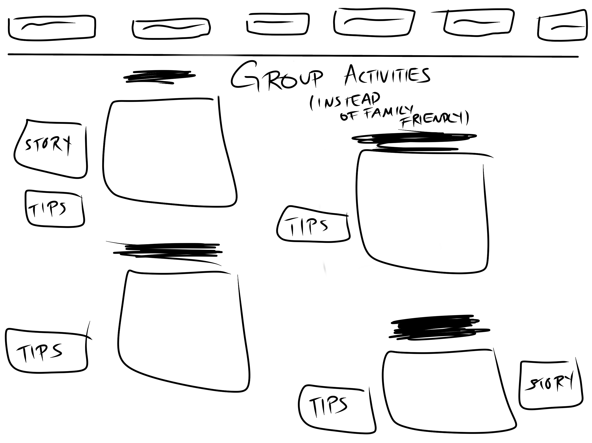

To come up with rough sketches for the website my group will be working on.
These are rough sketches, but I'm worried they might be too simple. I mean that was technically the purpose of the website though, to be simple, yet aesthetically pleasing to the eye to attract viewership. It will all come down to the styling. I was too lazy to do each but calming, exhilirating, and must are all a standard design for the entire website that will require that website. It's not each page will have a different look, because that's not it. We want there to be a pattern. a connection.
Well, it's a work in process of course but I think everything we have so far is coming along nicely. I can't wait to see what everyone else pitched so that we can come up with a design as a group
   